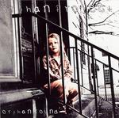

| Artist: | Orphan Project |
| Title: | Orphan Found |
| Label: | self produced |
| Length(s): | 59 minutes |
| Year(s) of release: | 2003 |
| Month of review: | [11/2003] |
| 1) | Coming Into View I: Discovering New Surroundings | 6.16 |
| 2) | Chosen | 6.01 |
| 3) | Full But Lonely | 3.55 |
| 4) | Leaving My Seat At The Table | 6.12 |
| 5) | Trickle Down | 4.26 |
| 6) | Coming Into View II: Encircling Arms Of The Father | 5.00 |
| 7) | See What He Sees | 4.09 |
| 8) | Orphan Found | 5.08 |
| 9) | Parts As One | 4.39 |
| 10) | Paupers Unfulfilled | 5.14 |
| 11) | Coming Into View III: Gazing Down On Golden Streets | 6.54 |
| 12) | Outro: Wonderous Love | 1.18 |
Next one up is Chosen, which is more acoustic and even has some violin. Quite a bouncy track, the song has a drawback: the lyrics. It seems to me that the music is subservient to the lyrics in the sense that the lyrics are not really set to the music as such: there is music, there are lyrics but they do not always go together well. The story is more important, and as a result the songs suffer, because the text does not fit well in with the melodies (or by avoiding distinctive melodies). Not a strong track. On Full But Lonely, the progmetal comes back in, and this sounds better to me. Compact, repetitive guitar lines dominate, while keyboards add a mood of their own. This is much much better, memorable vocal lines and the lyrics fitting in well with the music. There is something of Threshold here, the full epic sound and the rhythm guitar work. The same holds for Leaving My Seat At The Table, it seems the second track was an exception (well up to now at least). The violin plays a supporting role bringing immediately Kansas to mind. The vocal performance is quite strong here, they are clear and the lyrics now add something to the music giving a stronger emotional impact for the song as a whole. Very good.
With Trickle Down the loudness diminishes yielding the way for some moody keyboards. Soon after the guitar reenters the stage for some nice soloing. The song itself is quite a catchy and bombastic affair, mainly in the AOR vein, but also with some more thoughtful interludes. The electric lead guitar dominates on the opening Coming Into View II: Encircling Arms Of The Father. The song is quite similar to the opening first part: the vocal parts rather relaxed, a catchy chorus and some sharp solo guitar parts. Not bad, but not very distinctive either.
On See What He Sees, we open with a chamber orchestra. The vocalist sings on the edge here, obtaining in this way a strongly emotional rendition. In places I get the feeling again that the story is more important than the music, but this is made good by the very strong other parts, where melody and emotions reign. The string orchestra intermezzo is very nice too.
We have now arrived at the title track which combines the drone of rhythm guitar with modern (industrial) synths. Again, I am reminded of Threshold. Like in earlier tracks, the verses are not that impressive, but the chorus is. Excellent melody there, and the harmony vocals are also quite welcome. The violin again injects a Kansas feel. Parts As One has quite a distinctive melody, but lacks a bit of fire. maybe a bit too careful this one.
Paupers Unfulfilled is a folky feel, also with the violin setting in again. A waltzy accessible feel dominates. Coming Into View III: Gazing Down On Golden Streets is the conclusion of the Coming Into View trilogy. Opening with samples of flowing water it tries to confer a feeling of peace and tranquility. The sharp guitar playing reminds me at times of Steve Rothery.
Outro: Wonderous Love is the short closer. A bit of a Clannad feel here.